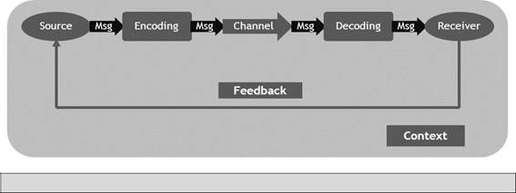

Chapter 2
Customer Service
The communication
process is illustrated below.
Let us define the
terms in the diagram:
Diagram 4:
Communication process

Definition
i.
Source: As the source of the message, the agent
must be clear about why she is communicating, and what she wants to
communicate, and confident that the information being communicated is useful
and accurate.
ii.
Message is the information that one wants to communicate.
iii.
Encoding is the process of transferring the
information one wants to communicate into a form that can be sent and
correctly decoded at the other end. Success in encoding depends on how well one
is able to convey information and eliminate sources of confusion.Failure
to do so can result in delivering messages that are misunderstood.
iv.
A
Message is conveyed through a channel, which has to be selected for the
purpose. The channel may be verbal including personal face-to-face meetings, telephone and videoconferencing; or it may be written
including letters, emails, memos, and reports.
v.
Decoding is the step wherein the information gets
received, interpreted and understood in a certain way, at its
destination. It can be seen that decoding [or how one receives a message] is as
important as encoding [how one conveys it].
vi.
Receiver: Finally there is the receiver, the
individual or individuals [the audience] to whom the message is sent.
Each member of this audience has his own ideas, beliefs and feelings and these
would influence how the message has been received and acted upon. The sender
obviously needs to consider these factors when deciding what message to send.
vii.
Feedback: The sender needs to look for verbal or
non-verbal feedback and carefully understand these reactions as it would help
to determine how the message has been received and acted upon. If necessary the
message could be changed or rephrased.